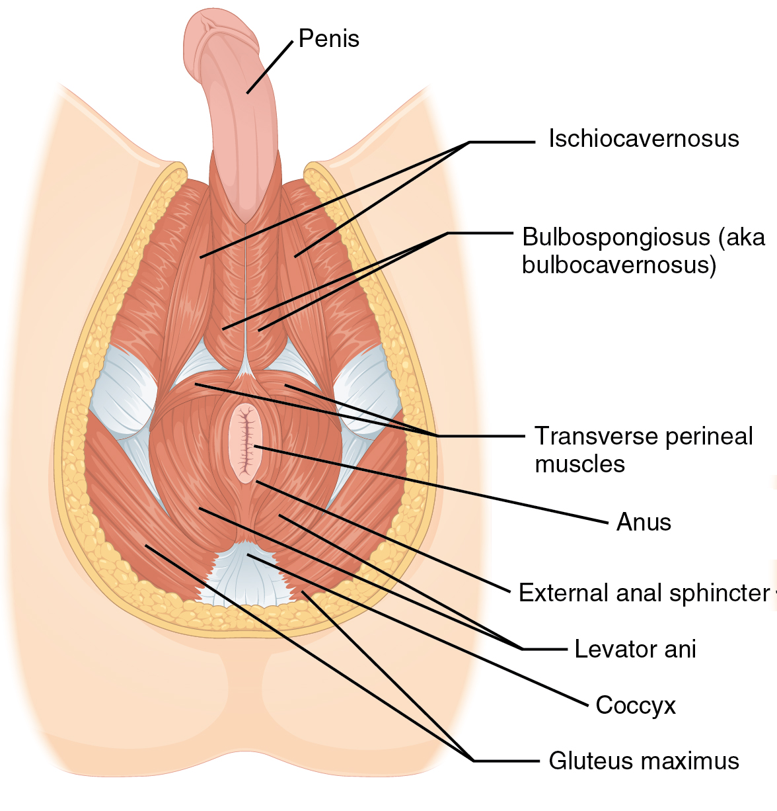

Giải Mã Phản Xạ Xuất Tinh Tại Tủy Sống: Pha Tiết Tinh (Emission) vs. Pha Phóng Tinh (Expulsion)
Trong sinh lý học y khoa, đáp ứng tình dục nam giới được tóm gọn bằng nguyên tắc kinh điển của hệ thần kinh "Point and Shoot" (Cương và Phóng)—bởi vì sự cương cứng và sự xuất tinh được điều khiển bởi hai nhánh đối lập nhau của Hệ Thần Kinh Tự Chủ (Giuliano & Clement, 2005; Alwaal và cộng sự, 2015):
- Sự Cương Cứng ("Point") thuộc Hệ Phó Giao Cảm (S2–S4): Đòi hỏi sự điềm tĩnh của dây thần kinh phế vị, nồng độ adrenaline thấp, hơi thở mũi chậm rãi và sự giãn mạch nhờ phân tử Oxit Nitric (NO).
- Sự Xuất Tinh ("Shoot") thuộc Hệ Giao Cảm & Thần Kinh Thân Thể (T10–L2 & S2–S4): Được kích hoạt khi sự hưng phấn của hệ thần kinh giao cảm leo thang chạm ngưỡng tới hạn, châm ngòi cho một cung phản xạ tủy sống gồm 2 pha:
1. Pha 1 — Tiết Tinh / Emission (Hệ Giao Cảm Ngực – Thắt Lưng T10–L2): Các dây thần kinh giao cảm làm co cơ trơn ống dẫn tinh, túi tinh và tuyến tiền liệt, đẩy dịch tinh vào niệu đạo sau (niệu đạo tiền liệt tuyến) đồng thời đóng chặt cổ bàng quang. Ngay khoảnh khắc Pha Tiết Tinh hoàn tất, nam giới chạm tới Điểm Không Thể Quay Đầu (Point of No Return — PONR)—được cảm nhận chủ quan là cảm giác "chắc chắn phải xuất tinh".
2. Pha 2 — Phóng Tinh / Expulsion (Thần Kinh Thẹn Thân Thể S2–S4): Áp lực căng tại niệu đạo tiền liệt tuyến kích hoạt trung tâm phát nhịp xuất tinh tại tủy sống (tế bào LSt), phát lệnh cho nhóm cơ vân Hành hang (BC) và Mu cụt (PC) co thắt nhịp nhàng ngoài ý muốn mỗi 0,8 giây/lần.
Vì sao nam giới lại bị xuất tinh sớm? Bởi vì trương lực giao cảm quá cao (lo âu, thở nông vùng ngực, và đặc biệt là thói quen vô thức gồng co cơ hành hang liên tục trong lúc chuyển động) đã đẩy tủy sống lao thẳng vào Pha 1 Tiết Tinh trước cả khi não bộ kịp nhận ra mức hưng phấn đã vượt qua Mức 7!

Lập Bản Đồ Thang Độ Hưng Phấn Lâm Sàng 10 Bậc
Bạn không thể chặn đứng một trận lở tuyết khi nó đã lao xuống sườn núi ở Mức 9. Như thử nghiệm lâm sàng của Pastore và cộng sự (2014) đã chứng minh—nơi 82,5% nam giới tăng gấp 4,6 lần thời gian kiểm soát—chìa khóa làm chủ bản lĩnh nằm ở việc điều tiết hệ thần kinh tự chủ trong khoảng từ Mức 4 đến Mức 7:
| Bậc Hưng Phấn | Cảm Giác Sinh Lý Chủ Quan | Trạng Thái Thần Kinh Tự Chủ & Tim Phổi | Trạng Thái Cơ Sàn Chậu | Chiến Thuật Xử Lý Chính Xác Cần Triển Khai |
|---|---|---|---|---|
| Mức 1 – 3 | Hưng phấn khởi đầu, dạo đầu và bơm máu động mạch. | Phó Giao Cảm Chiếm Ưu Thế: Nhịp tim điềm tĩnh (70–95 bpm), hơi thở sâu nhịp nhàng, dòng Oxit Nitric dồi dào. |
Trương lực nền thư giãn kèm các nhịp co cơ IC tự nhiên. | Tận hưởng kết nối xúc giác; duy trì hơi thở mũi chậm rãi. |
| Mức 4 – 6 | Vùng Duy Trì Lý Tưởng: Độ cương cứng tối đa, khoái cảm ổn định, làm chủ hoàn toàn tâm trí. | Cân Bằng Tự Chủ: Nhịp tim tăng vừa phải (100–120 bpm); hệ giao cảm bắt đầu tham gia nhẹ. |
Nguy cơ tích tụ lực căng vô thức ở đáy chậu khi chuyển động nhanh. | Triển khai Kegel Ngược (Reverse Kegel): Chủ động hạ và giãn mở đáy chậu theo hơi hít vào bụng để giữ cơ BC luôn mềm mại. |
| Mức 7 | Cửa Sổ Can Thiệp Vàng: Khoái cảm dâng cao, nhịp thở gấp hơn, cảm giác ấm căng vùng tuyến tiền liệt. | Cảnh Báo Đỉnh Giao Cảm: Nhịp tim tăng nhanh (125–145+ bpm); tế bào LSt tủy sống tiến sát ngưỡng tiết tinh. |
Xuất hiện các nhịp giật co tiền-phản-xạ tại cơ Hành hang và Mu cụt. | Thực hiện Khóa Kegel Tĩnh (Kegel Lock): Tạm dừng chuyển động, thở ra chậm và giữ nhịp co tĩnh BC/PC trong 5–8 giây để ức chế phản xạ tiết tinh. |
| Mức 8 | Điểm Không Thể Quay Đầu (PONR): Pha Tiết Tinh vào niệu đạo sau đã kích hoạt. | Bùng Nổ Giao Cảm (T10–L2): Sự co thắt tuyến tiền liệt và túi tinh không thể đảo ngược. |
Hành niệu đạo căng đầy; cung phản xạ tủy sống đã khóa. | Đã quá muộn để dừng lại; siết cơ lúc này chỉ làm tăng lực phóng tinh. |
| Mức 9 – 10 | Phóng Tinh & Cực Khoái: Các nhịp co đẩy tinh dịch và bước vào giai đoạn trơ. | Xung Thần Kinh Thẹn (S2–S4): Tiếp nối bằng sự tiết prolactin và phục hồi phó giao cảm. |
Cơ BC co thắt tự động mỗi 0,8 giây/nhịp. |
Hít thở sâu và cho phép sàn chậu thư giãn hoàn toàn sau cực khoái. |
Vì Sao Bạn Cần Cả Hai Công Cụ: "Kegel Ngược" (Mức 4–6) và "Khóa Kegel" (Mức 7)
Một trong những phát hiện quan trọng nhất của y học tình dục hiện đại là giải thích vì sao việc gồng siết cơ sàn chậu liên tục trong suốt lúc quan hệ lại khiến bạn xuất tinh nhanh hơn, trong khi chọn đúng thời điểm giãn – khóa lại giúp kéo dài thời gian gấp nhiều lần:
1. Kỹ Thuật "Kegel Ngược" — Reverse Kegel (Giữ "Động Cơ" Mát Mẻ Ở Mức 4–6)
Trong khi chuyển động, đa số nam giới vô thức gồng cứng cơ mông, cơ bụng và cơ hành hang theo từng nhịp đẩy. Sự căng cứng đáy chậu liên tục này dội hàng loạt tín hiệu kích thích về dây thần kinh thẹn, đẩy bạn từ Mức 4 vọt lên Mức 8 chỉ trong chưa đầy một phút. - Cách Thực Hiện Kegel Ngược: Khi đang ở Mức 4 đến Mức 6, hãy hít sâu xuống vùng bụng dưới và nhẹ nhàng thả chùng, giãn mở vùng đáy chậu hướng xuống dưới—tạo cảm giác êm ái như khi bạn chuẩn bị mở van đi tiểu (nhưng chỉ thả giãn nhẹ, không rặn mạnh). Kỹ thuật này giữ cho cơ hành hang luôn mềm mại và cách xa ngưỡng co thắt phản xạ.
2. Kỹ Thuật "Khóa Kegel Tĩnh" — Isometric Kegel Lock (Phanh Khẩn Cấp Ở Mức 7)
Khi cảm giác hưng phấn leo lên Mức 7/10 (ngay trước Điểm Không Thể Quay Đầu), một nhịp co giữ tĩnh (isometric hold) kéo dài 5 đến 8 giây của cơ Mu cụt và cơ Hành hang sẽ đóng vai trò như một cầu dao ngắt mạch sinh lý (Pastore và cộng sự, 2014; La Pera, 2014): - Cơ Chế Ức Chế Phản Xạ Thần Kinh: Trong khi việc nhấp co liên tục kích thích phản xạ xuất tinh, thì một nhịp giữ tĩnh liên tục và vững chắc (5–8 giây) sẽ kích hoạt thụ thể gân Golgi và truyền tín hiệu hướng tâm ức chế qua dây thần kinh thẹn ngược về tủy sống cùng, làm dịu trung tâm tiết tinh giao cảm và ngăn dịch tinh tràn vào niệu đạo tiền liệt tuyến.
Giao Thức Thực Hành 5 Bước: Triển Khai Kỹ Thuật "Khóa Kegel" Trong Thực Tế
Hãy luyện tập thuần thục chuỗi 5 bước này khi tập luyện cá nhân (edging conditioning) trước, sau đó áp dụng nhịp nhàng cùng bạn đời mỗi khi nhận thấy hưng phấn chạm Mức 7/10:
- Bước 1 — Tạm Dừng Ma Sát Cơ Học Ngay Tại Mức 7: Ngay khoảnh khắc bạn nhận thấy hơi thở bắt đầu gấp gáp hoặc cảm giác ấm căng sâu ở vùng tuyến tiền liệt (
Mức 7), hãy tạm dừng mọi nhịp đẩy ngay lập tức. Giữ nguyên sự kết nối tĩnh tại và ấm áp bên trong bạn đời để ngắt luồng xung kích thích cơ học truyền về dây thần kinh lưng dương vật. - Bước 2 — Thở Ra Chậm Qua Mũi (Phanh Hệ Thần Kinh Tự Chủ): Thay vì nín thở hay thở gấp—vốn làm tăng vọt adrenaline giao cảm—hãy hít vào nhẹ qua mũi rồi thở ra thật chậm và đều trong 6 giây. Hơi thở ra kéo dài sẽ kích hoạt Dây thần kinh phế vị (Vagus Nerve) và kéo nhịp tim của bạn dịu xuống chỉ sau 3 đến 4 nhịp đập.
- Bước 3 — Thực Hiện Nhịp "Khóa Kegel Tĩnh" 5 Đến 8 Giây: Ngay khi bắt đầu thở ra, hãy rút phần gốc dương vật và đáy chậu vào trong và nâng lên dứt khoát (
khoảng 80% lực tối đa), sau đó giữ tĩnh hoàn toàn trong 5 đến 8 giây. Tuyệt đối không nhấp nhả; hãy giữ một lực khóa êm và chắc để đóng niệu đạo sau và làm dịu phản xạ tiết tinh tại tủy sống. - Bước 4 — Chuyển Sang 5 Giây Thả Giãn "Kegel Ngược": Sau khi giữ khóa đủ 5 đến 8 giây, hãy hít sâu vào bụng dưới và chủ động thả rơi, giãn mở toàn bộ sàn chậu (
Reverse Kegel). - Bước 5 — Tiếp Tục Nhịp Độ Kiểm Soát Ở Mức 4–5: Chỉ sau
10 đến 15 giây, bạn sẽ cảm nhận áp lực căng tức ở tuyến tiền liệt tan biến và mức hưng phấn lùi về Mức 4 hoặc Mức 5 đầy tự chủ. Hãy tiếp tục cuộc yêu với nhịp độ điềm tĩnh trong khi giữ hàm, vai, bụng và đáy chậu thư giãn.
Tài Liệu Tham Khảo & Nguồn Y Khoa
- Pastore, A. L., Palleschi, G., Fuschi, A., Maggioni, C., Rago, R., Zucchi, A., Costantini, E., & Carbone, A. (2014). Pelvic floor muscle rehabilitation for patients with lifelong premature ejaculation: a novel therapeutic approach. Therapeutic Advances in Urology, 6(3), 83–88. https://pubmed.ncbi.nlm.nih.gov/24716983/
- Giuliano, F., & Clement, P. (2005). Physiology of ejaculation: emphasis on serotonergic control. European Urology, 48(3), 408–417. https://pubmed.ncbi.nlm.nih.gov/15996810/
- Alwaal, A., Breyer, B. N., & Lue, T. F. (2015). Normal male sexual function: emphasis on orgasm and ejaculation. Fertility and Sterility, 104(5), 1051–1060. https://pubmed.ncbi.nlm.nih.gov/26385403/
- La Pera, G. (2014). Awareness and timing of pelvic floor contraction to inhibit the ejaculatory reflex in premature ejaculation. Journal of Sexual Medicine / Archivio Italiano di Urologia e Andrologia. https://pubmed.ncbi.nlm.nih.gov/25060956/